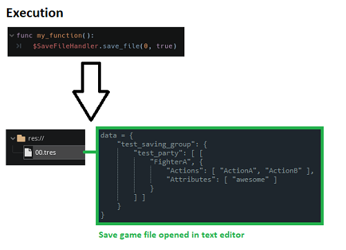

extends Node
Manages saving and loading player data using Godot's group system. Nodes in each group within save_groups have their save_data functions called to fill the group key of the save file dictionary.
Example Usage:

The Godot groups that this node searches to load and save data from.
The folder where save games are stored, typically within the user:// folder.
A seperate folder to save debug save games to. The developer path can be used to save files within the project root folder to allow for quick editing and testing. Note that any files saved in res:// are impossible to be read in an exported game, so it is ideal to keep the save_folder_path within user://.
-
Saves or overrides file at the id specified as a .tres file without encryption. If developer_mode is true, this node will save to the developer_save_folder_path instead of save_folder_path.
Loads file at the id specified. If developer_mode is true, this node will load from the developer_save_folder_path instead of save_folder_path.